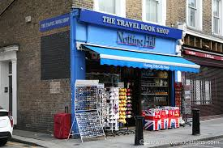
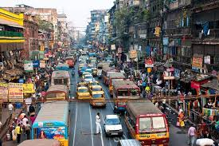

Hi everyone, I'm Margaux and I'm here to share with you about my trips.✈️🌍🗺 I love travelling and discovering new cultures, new ways of life and new spots. So if you want good plans and some tips to organize your trips, let's talk together!🤪💫
London is the capital city of the United Kingdom. It's a very beautyful city which welcomes you with its big wheel 🎡 and its famous queen 👸 Elisabeth the Second. Between Camden Town, Soho or Oxford Street, you can be sure that you will no be bored. Oh you can go in Nothing Hill and visit the famous bookshop 📚 where Hugh Grant bought one in the movie.
New-York City is not the caiptal city of the USA but it's a very cool city. Called "The city that never sleeps" 🌃, NYC is never in the black. Walking down on Times Square or visitinf the Liberty Statue 🗽is so enjoying. Furthermore, you can see the hight line from the Brooklin Bridge 🌉 or eat a hot-dog on Broadway Street. And don't forget to go en the 5th Avenue and spend all your money in your favorite shops!👛
Kolkata is an indian city🥘. It is a very poor city but where people are so nice🥻. This is the city that made me the voluntee to discover all India. Between the red, the orange and the green ❤️🧡💚, people are always smiling and here to help you in the fantistic country☮️. But be careful, the food is so spicy 🌶!
If you like eating pizzas, pastas and ice creams 🍕🍝, go and visit Italia. Roma is the oldest city I've ever visited. The Colyseum, the Pantheon or also the Piazza Navona ⛲️ are one of the most beautyful and strong monuments I've never seen. Roma is near the Vatican, so you can spend a day there and meet the Papa, something very magic to do ⛪️.
I'm flying to Sevilla on Monday. I'm so excited to discover this town which seems so awesome. It's a town with an oriental style 🕉 and spainish coutums 🐃. I've never been in Andalusia 💃 so I hope I won't be disappointed. Stay tuned to follow my trip 😉.